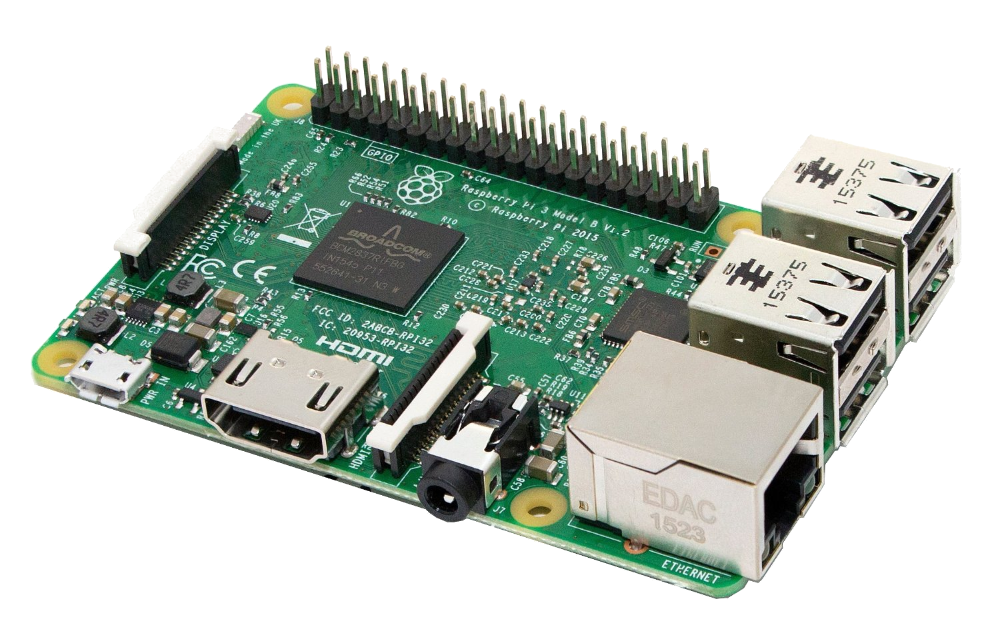
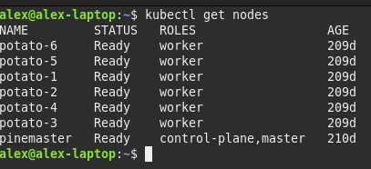
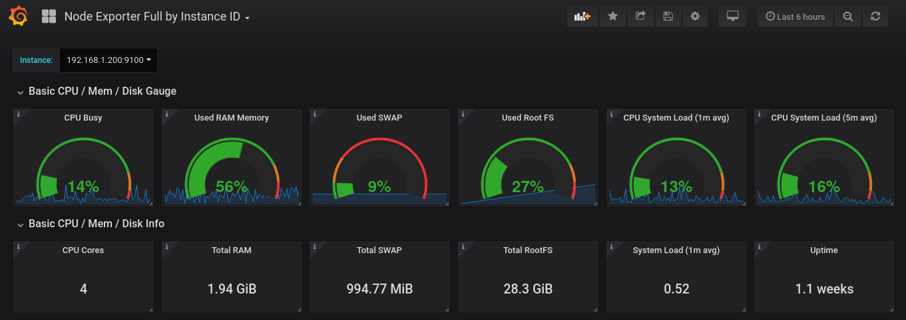
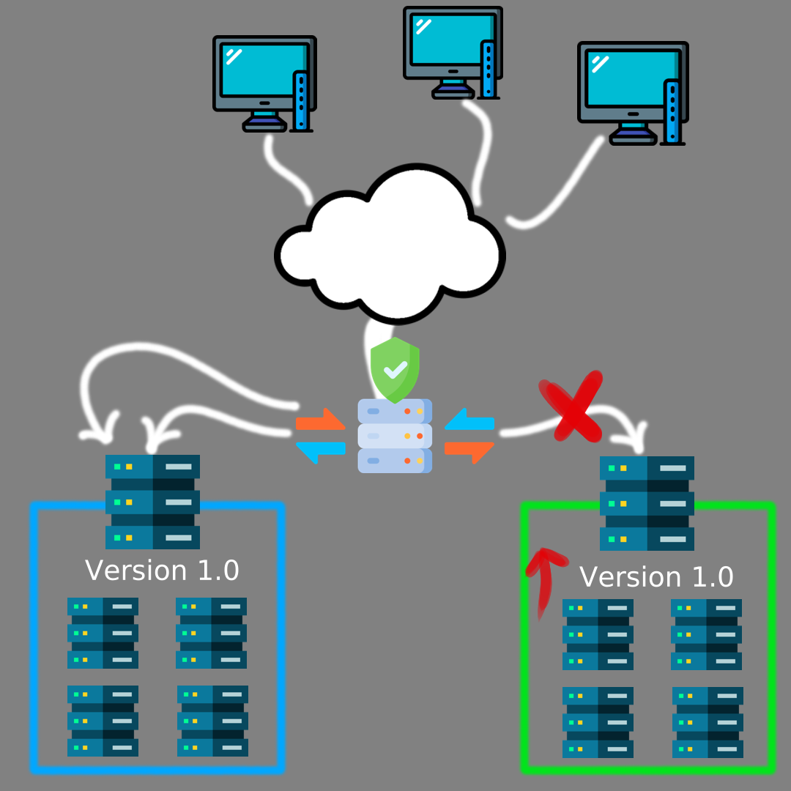

Hello! This is Part One of my series covering my baremetal Kubernetes cluster using K3S! For starters, I’ll be going through the content of my DevCon 2023 talk to set the groundwork for my cluster.
A long time ago, in a galaxy far, far away… monolith servers ruled the land. They were big, beefy machines with stunning specs. Really fat computers with a dedicated corner in the office to accommodate for their size. This was the beginning of servers - singular machines with phenomenal specs which dished out tens or maybe hundreds of services. At this point in time, they were the foundation of technology and many proud companies named their servers.
Well, I’m not here to talk about the past. Instead, let’s look towards the future of servers: cluster computing.
As the name suggests, cluster computing involves using several individual computers to work together in an organised and orchestrated manner. More on that later.
Cluster computing comes with many benefits over traditional monolith servers. First, a single computer has limited hardware upgradability. Let’s take my home PC into consideration; I can only put the latest CPU, the best RAM and the most powerful GPU, but at the end of the day, I am limited by how powerful the latest tech is. Now, imagine my website blows up someday and becomes super popular. The CPU will then become a major limiting factor. Cluster computing circumvents this by emphasising on horizontal upgradability instead of vertical. In other words, favour quantity over quality.
Additionally, the use of a cluster leads to redundancy. I host PiHole on a Raspberry Pi at home. It’s very useful for blocking ads. However, if this Pi were to die, then I would start seeing ads online - a real tragedy. With a cluster of several servers, if one catches fire and dies, the services [PiHole] will just be sent to another server and continue working.
Some further benefits I will expand on shortly are better upgradability, availability and portability.

This brings me to Kubernetes! It is an industry standard for cluster computing, and is one of the most prominent technologies used, alongside Apache Mesos, Docker Swarm, Nomad, and Hadoop. Interestingly, Google came up with Kubernetes and used it internally before releasing to the public and making it Open Source (Yay!). Kubernetes has a meaning, by the way: helmsman or pilot of a ship, in Greek.
One of the fundamentals of Kubernetes (K8S) is pods, which are the smallest unit of K8S. They contain containers (lol) such as Docker. Pods are able to be moved around across nodes of a cluster, hence providing the redundancy mentioned previously.
K8S provides certain facilities too, which I’ll cover very briefly.
Load Balancing allows sharing of work between nodes in the cluster, and equal distribution to ensure no node is overloaded.
K8S also allows scaling of apps, which is very useful in a production environment. Depending on demand for a certain service, K8S will automatically increase or decrease the number of pods, to make sure you’re using your resources optimally.
K8S provides facilities for exposing ports and IP addesses, with easy port mappings, similar to Docker.
And last but definitely not least, K8S will restart dead pods or move them around if the node they are running on dies or is overloaded.
Okay, but in my case, I’m also looking at Single Board Computers. What the heck are they? Well, as their name suggests, they are computers on a single PCB, such as the Raspberry Pi - everything is onboard including CPU, RAM, GPU etc…
These SBCs are usually ARM based, with some exceptions of course which sport x86 processors from the Intel Celeron family. And technically speaking, SBCs have been around since the dawn of the PC, with the Acorn or BBC Micro which utilised SBCs as their main and only board.
However, modern-day, you usually think of the credit card sized PCs which are now widely available from a variety of different manufacturers.
You may then ask why I’m talking specifically in the context of SBCs. Like why do I not use a cluster of 5 old desktops, some of those old Pentium 2 machines.
Well first of all, those machines can’t be found nowadays without copious amounts of spiderwebs and enough dust to make a dust-storm.
Why not use the cloud then, you may say… Something like AWS or Google Kubernetes Engine? Well, for starters, once you own your cluster, it’s yours. No monthly fees from cloud infra providers, meaning no heart attack when you get a $5k bill from AWS because you accidentally left your server running too long. None of that! When you have your cluster, your only recurring cost is electricity. And even then, the initial cost is pretty low for some decently powerful SBCs like the Pi4 or RK1.
Speaking of electricity, you’ll spend way less on an SBC cluster as compared to clustering old [not power efficient] computers or industrial grade servers. Admittedly, you will be achieving lower performance per watt - but lower electricity by far. If you’re not trying to homelab your own AWS, then you can probably sacrifice that additional performance to slash your electricity costs. My cluster of 7 SBCs, on max load, would draw 75W, which is quite little!
However, with SBC clusters, you have less hardware upgradability. For example, you can’t [practically] swap out the CPU or RAM. Additionally, you lack NVME’s, dedicated graphics cards and the like.
Additionally, since SBCs are typically ARM, some software may not be compatible, although this is rapidly changing due to Apple’s M1 and M2 chips which are ARM.
So what are some pre-requisites before you’re able to be rocking Kubernetes?
Well, I trust some people are already familiar with SBCs and how you set them up. It starts with flashing an OS onto the micro SD card which is your boot drive most of the time.
I use Balena Etcher for that, the software is very reliable. Plug the SD card in and do all the first-run config, such as setting up users, groups and passwords. I should also mention using different hostnames for your cluster nodes, since Kubernetes doesn’t appreciate it otherwise.
You can use many different operating systems (but please Linux) such as Ubuntu Server, Raspberry Pi OS, Armbian or even Arch if I recall correctly.
At this stage, you should also think of your architecture, if you will go for blue/green deployment (more on that later). If you will do dedicated storage through a SQL server or similar. And since we’re in the world of redundancy, consider having more than 1 master node.
Now, so far, I’ve been talking about Kubernetes, which usually means K8S. However, there are many flavours other than K8S out there. For example, Minikube or K3S. I mention this since K8S does tend to be a bit resource hungry for the limited SBCs. Hence I use K3S, which is made and distributed by Rancher Labs, a company owned by SUSE. It’s more lightweight and hence leaves ample resources to run my services and apps.
Just because it’s slimmed down does not mean it’s any less powerful. In fact, it’s fully certified and fully functional, just like K8S. However, it emphasises on ARM architecture support and is marketed towards SBCs like the Pi.
It’s fairly simple, Rancher Labs provides an Ansible playbook to automate the installation of K3S on all your nodes with proper configuration. All you need to do is set some parameters and run.
Ansible is a means of automating configuration and is widely used in devops. Jeff Geerling has several books on Ansible and is working on one for Kubernetes essentials.
Parameters are passed in a .yaml file, where you declare the master and worker nodes through IP or hostname. This is your first encounter with .yaml files which are an integral part of Kubernetes.

It’s cool that you have your cluster now. But before deploying apps to it, I think you need to add monitoring. Monitoring is an essential part of any server system, to monitor temperatures, load, storage etc… Well, anything that could go wrong.
Prometheus and Grafana are standards used for self-hosted solutions. They work with Node Exporter which runs on every node and gathers metrics to send to Prometheus. Prometheus aggregates all the data and passes it onto Grafana which then displays graphs on a pretty web interface.

- Game Server (friends not included)
- Web Server
- Self Hosting (eg Pihole)
- IoT (large ecosystem surrounding the Pi, with Home Assistant)
- Edge Computing
- Testing (ARM deployments)
In a monolith server, hardware or software failures would usually impact services. As I mentioned earlier, this would equate to me seeing ads online, eww.
Cluster computing reduces this flaw, as pods exist detached from the nodes they run on. This means they can easily be moved around by the master node(s) in the case that a worker dies. This minimises downtime and uninterrupted service. To put this into perspective, it would be devastating for a bank to be down for even 30 minutes during peak hours in the days leading to Christmas! Hence Kubernetes helps minimise the impact of failures. One server on fire? Not even an inconvenience, just toss the pod elsewhere!
This is the bit full of complex terminology, but trust me, it’s not super relevant to a beginner entering the world of K8S; you’ll grasp these concepts as you learn more.
It’s a method of organising your containers and nodes to avoid downtime during upgrades. In a monolith system, if you’re upgrading your OS or HW, the system will be offline temporarily.
But with a cluster, you can upgrade nodes separately - in batches. You direct traffic away from one batch while you take it down for upgrading. The other batch(es) pick up on the slack. When the first batch has been upgraded and tested for stability, you can then redirect traffic back and repeat for the other batch(es).
This deployment is called Blue/Green as the Blue batch runs the current version while the green runs the updated version. In this method, there is no downtime and the service remains accessible.
I’ll compare this to McDonalds, to better explain. In a city, you have 2 outlets, but both need renovation. It makes logical sense to close only one at a time for renovation while the other continues to provide service.

Enterprises may have full testing infrastructure for trialling changes. My mum, for example, has 5 full enterprise servers just for testing out the stuff she develops. Sheesh.
Hobbyists, homelabbers and smaller businesses do not have such monetary facilities though. At best, they could trial something in a VM for a bit. But with a minicluster, it opens a lot of possibilities for testing and development without breaking the bank.
Additionally, a minicluster, due to low startup costs, may allow to test new concepts. No need to spend money on a full test environment with powerful servers. Alternatively, you can use such a cluster as a second test environment to test out something new. Most people reading this are innovators and love experimenting with tech, so this may let you try out that new tech you just read about without overwriting your test env.
And if you break something, no problem whatsoever! Just reflash the OS and reinstall K3S - it takes literally 15 minutes.
The cluster may also be useful to evaluate performance locally and test stability of whatever system you’re working on. And since Kubernetes is built around microservices, it is easily scalable and portable to the cloud or other servers as you may need.
Really, the sky is the limit, and I don’t have any industry exposure to tell you just what you can achieve with something so small yet so powerful!
- SBCs are becoming more powerful and cheaper. For example, Radxa Rock 5B, Lattepanda Sigma, Zimaboard…
- Raspberry Pi is commited to restoring production volumes to pre-pandemic levels, allowing you to finally get a cluster.
- Due to more Pi4’s hitting the market, there’s an influx of Pi3’s on the second hand market. This would be sufficient to at least learn about K8S and upgrade at a later date, when you become a full-on homelabber.
- The Raspberry Pi community is extremely beginner friendly, with piles of documentation and loads of people ready to help in the forums.
- SBC’s are very low power, so won’t be like stuffing a Dell PowerEdge under your bed, where it eats electricity like crazy and produces a lot of noise.
- SBC’s have decent power for personal use, in game servers, webservers, self hosting etc…
- You own your data. Thie means better privacy - your own cloud, email, search engine etc… Personal data is now worth a lot to train AI or for surveillance purposes and many companies are now under fire for unethical use of AI using personal data.
- And most importantly, it’s fun. Being able to play with hardware and build and rebuild your cluster is just fun. Take a part of your boring life and enjoy yourself by instead ripping your hair out when your server isn’t working!
That’s not to say that a minicluster does not have limitations. In fact, an SBC cluster has many of the same failing points as individual SBCs.
In a cluster, you cannot think of it like adding resources. 4 nodes of 2GB RAM does not equate to 1 node of 8GB RAM, not in K8S at least. Hence, resources may get cramped, especially when you start deploying heavy apps such as game servers.
And since you can’t really break a pod down further, if a pod cannot run on one SBC, it just cannot run on the cluster. This means your architecture must be well planned and optimised.
Additionally, SBCs have limited expansion or customisation. NO NVME, no RAM upgrade, and no part redundance (eg 2 PSU). This means they also have poor graphics capabilities and cannot realistically be used for AI or render farms.
And while these are valid drawbacks, at least at the time of me writing this, I can see many of them being plain wrong in the future, with all the amazing advancements so far. I mean, in 1U of server space, you could either have a single traditional server or 12 SBCs, complete with fast storage and everything, to total some 96 cores and 192GB RAM.
I’d like to end this first part with my ambitions for my cluster. Things like game servers, home assistant, plex, discord bots, nextcloud, download assistants (*arr) and sorts are on the horizon. Of course I could dedicate myself to a monolith, but if it dies, everything blows up. With a cluster, I get to remove any machine and everything keeps working absolutely fine. The additional effort in learning Kubernetes translates to more reliability and ease of management. It’s objectively better than manually managing a bunch of apps on a monolith server which isn’t really repeatable, reliable or isolated. There’s a lot of cool stuff going on in the world of Kubernetes and SBCs, so maybe you’ll decide to have a K3S cluster at home or work! And if you’re like me, you’ll benefit from learning a lot and having heaps of fun doing so!